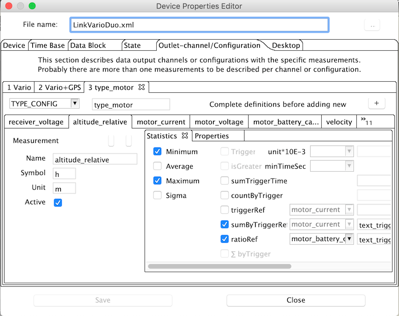

DevicePropertiesEditor
Using the OpenSerialDataExplorer menu bar or started as standallone application it is possible to create new or modify existing device properties files.
Doing this the device XML files are touched.

Using the menu bar the device properties file of the actual device will be opened.
Is that the case, manipulating properties will not directly manipulate all properties of an already loaded and displayed data set.
Will the DevicePropertiesEditor started as standalone application, it is possible to type the name of the device directly, if known.
Is the name unknown to the application and can not be find in the devices directory a new device properties file might be created.
 A sample files gets extracted and needs to be adapted as required.
Selectiong the button, right hand side, a dialpg will opened to enable selection of an existiong file.
A sample files gets extracted and needs to be adapted as required.
Selectiong the button, right hand side, a dialpg will opened to enable selection of an existiong file.

The device tabulator shows how to specify name and manufacturer of an device.
Switching the implementation active, the implementing device class name has to be configured, optional as full qualified including the package.
The implemetaion can always used if an equal device implementation class is already available, and/or if the device name does not fit.
As an example the CSV2SerialAdapter has seveeral devices using this implementation, differences exist in the data block specification.
As additional example the several copies of the Bantam charger devices can be named, where differences exist in cover design and device name.
The captured data should be found under the directory followed the device name, isn't it.
 If the 'package' is not given, the 'package' gets calculated starting with "osde.device.", followed by the manufactureer name, converted in lower case and hyphen and blanks eleminated.
The default class name can be calculated by removing blanks and hyphen.
Kapital letter are kept.
If the 'package' is not given, the 'package' gets calculated starting with "osde.device.", followed by the manufactureer name, converted in lower case and hyphen and blanks eleminated.
The default class name can be calculated by removing blanks and hyphen.
Kapital letter are kept.
The image name can directly typed if known and it references an existing within the device plug-in.
If the image gets selected by use of the right hand side button and file selection dialog the selected image gest scaled to 225x165 pixel.
In addition it is possible to pack the image directly into the referenced plug-in.
Modifying the plug-in could only done in the temporary folder where write rights are gauaranteed.
If this option is choosen the modified plug-in must be copied to the aplication directory, where the plug-in can be added to the classpath.
 How to do that will be advised in a message box.
How to do that will be advised in a message box.
Hint : This change might be get lost while updating the application. A backup might be saved somewhere else by your own.
 The serial port gets configured easily by selectiong aproriate values from the combo boxes.
The serial port gets configured easily by selectiong aproriate values from the combo boxes.
Hinweis : If timeouts gest specified the implementation must be written to use this values. The description of the serial port is optional due to the fact that some devices dont use it and read simulated serial data from text files. As example the CSV2SerialAdapter devices does not have a serial port specified.
 To configure the time base is simple.
A value greater than 0 milli seconds as time step between the measurement points is voted as constant time gap.
The time step value lower than 0 milli seconds signals that the device gives individual time steps.
This must not mean that the time steps might not constant.
The implementation for the particular device must handle this situation.
To configure the time base is simple.
A value greater than 0 milli seconds as time step between the measurement points is voted as constant time gap.
The time step value lower than 0 milli seconds signals that the device gives individual time steps.
This must not mean that the time steps might not constant.
The implementation for the particular device must handle this situation.
Hint : The UniLog, as example, uses an adjustable but constant time step between measurement points. Therefore the time step is -1 msec. Finally the device implementation must handle the situation and read the time step value for each sequence and use it as constant value for the data.
The next two pictures contrast two different data block configurations.
The UniLog configuration describes binary data with a constant length of 24 bytes.
Is 24 bytes the maximum and a shorter length as example 20 bytes possible the configuration must point out -24 as value.
The data type is BINARY and no separator sign is configable.

 Is TEXT choosen as data type additionally configuration parameter must be specified.
The file extension, what is used during file selection, as well as the standard data path, will help to select files faster.
Both are optional, but help, if data files are deliverd by a memory card, like the DataVario from WStech, which will appear with an dedicated path value if inserted into the computer.
Is TEXT choosen as data type additionally configuration parameter must be specified.
The file extension, what is used during file selection, as well as the standard data path, will help to select files faster.
Both are optional, but help, if data files are deliverd by a memory card, like the DataVario from WStech, which will appear with an dedicated path value if inserted into the computer.
Hint : This configuration are optional. Other implementation might use this parameters in a different way.
 The state tabulator will describe a sequence number to device states.
This description makes sense if a device can use more than one state and data are imported by a text file using the CSV2SerialDataAdapter.
Finally the device implementation use the states and match it somehow with the data.
The state tabulator will describe a sequence number to device states.
This description makes sense if a device can use more than one state and data are imported by a text file using the CSV2SerialDataAdapter.
Finally the device implementation use the states and match it somehow with the data.
Hint : If text data are imported using the CSV2SerialDataAdapter the state 1 would be charge ($1;1;time;data;..), and state 2 discharge ($1;2;time;data;..) compared to the sample.
 The tabulator with the name channle/configuration is the most complex and the biggest one.
Here, as required or desired, the device outlet as a data channel or different configurations gets described.
As described two different types of channel/configurations are available.
A charger device with only one outlet to connect one batterie at a time has only needs to configure only one channel/configuration from type outlet.
The sample on right hand side just showing this.
Underneath the area where the type and the name has to be configured another tabulator describes the individual measurements.
The measurement configuration is resposible how the data are finally displayed in the various windows including the unit and the statistic mathematics.
Hint : Is the channel/configuation type is choosen as configuration (TYPE_CONFIG) different configurations could be combined with identical data set.
If a copy of an channel/configuration is nessecary it is sensefull to complete the measurement configuration which belongs together before do the copy.
The tabulator with the name channle/configuration is the most complex and the biggest one.
Here, as required or desired, the device outlet as a data channel or different configurations gets described.
As described two different types of channel/configurations are available.
A charger device with only one outlet to connect one batterie at a time has only needs to configure only one channel/configuration from type outlet.
The sample on right hand side just showing this.
Underneath the area where the type and the name has to be configured another tabulator describes the individual measurements.
The measurement configuration is resposible how the data are finally displayed in the various windows including the unit and the statistic mathematics.
Hint : Is the channel/configuation type is choosen as configuration (TYPE_CONFIG) different configurations could be combined with identical data set.
If a copy of an channel/configuration is nessecary it is sensefull to complete the measurement configuration which belongs together before do the copy.
 Messwerte beschreibt man mit dem Namen, welche Einheit sie besitzen, welche Symbol verwendet werden soll und ob sie aktiv aus dem Gerät ausgelesen werden können, oder ob sie durch Berechnung entstehen.
Desweiteren gibt es optionale Eigenschaften, z.B. über Faktor, Offset und Reduktion die Anzeige der (Roh-)Daten beeinflussen.
Messwerte beschreibt man mit dem Namen, welche Einheit sie besitzen, welche Symbol verwendet werden soll und ob sie aktiv aus dem Gerät ausgelesen werden können, oder ob sie durch Berechnung entstehen.
Desweiteren gibt es optionale Eigenschaften, z.B. über Faktor, Offset und Reduktion die Anzeige der (Roh-)Daten beeinflussen.
Hinweis : Benötig man weitere Eigenschaften oder Statisikeinstellungen kann man diese durch das Kontextmenu anfordern. Nach der Vervollständigung kann man dann die gerade fertiggestellte Messwertkonfiguration in eine Neue, durch Selektion des +Knopfes, kopieren. Zu den Eigenschaften (Properties) ist wenig zu sagen, da hier nur vorbestimmte ausgewält werden können und nur noch der Wert entsprechend anzupassen ist.
 Hier wird ein Statistikbeispiel gezeigt, das nicht nur die zu berechnenden Werte beschreibt, sondern auch einen Schwellwert (Trigger) , der über Größe und Zeit einen Auswertebereich festlegt.
Außerdem wird bestimmt, dass die Zeit, an der der eingestellte Schwellwert wirksam wird, aufsummiert werden soll. Hieraus kann dann, wie im Beispeil, die wirkliche Motorlaufzeit berechnet werden.
Zusätzlich wird eingestellt, dass die Anzahl der Ereignisse gezählt werden soll.
Hier wird ein Statistikbeispiel gezeigt, das nicht nur die zu berechnenden Werte beschreibt, sondern auch einen Schwellwert (Trigger) , der über Größe und Zeit einen Auswertebereich festlegt.
Außerdem wird bestimmt, dass die Zeit, an der der eingestellte Schwellwert wirksam wird, aufsummiert werden soll. Hieraus kann dann, wie im Beispeil, die wirkliche Motorlaufzeit berechnet werden.
Zusätzlich wird eingestellt, dass die Anzahl der Ereignisse gezählt werden soll.
Hinweis : Zu den meisten Schwellwert bezogenen Einstellungen gibt es die Möglichkeit Kommentare hinzuzufügen. Das ist für die Lesbarkeit von großem Vorteil (Statistik Anzeige).
 Hier wird gezeigt, wie die Auswertung eines anderen Messwertes durch einen bereitz definierten Schwellert (Trigger) beeinflusst werden kann. In dem gezeigten Beispiel wird durch die Anwahl von "sumByTriggerRef" ausschliesslich die Höhe aufsummiert, die im definierten Schwellwert gewonnen wurde. Jetzt zeigt sich wie gut eine Luftschrauben-, Motor-Anpassung vorgenommen wurde, beziehungsweise es lassen sich jetzt wirkliche nachvollziehbare Vergleiche anstellen. Zusätzlich wird hier gezeigt, wie hier eine Verhältnismässigkeit gebildet werden kann, die ein Verhältnis der verbrauchten Akkukapazität zur erreichten Höhe darstellt. Auch das erlaubt gewisse Aussagen über die Anpassung der zur Verfügung stehenden Leistung zur Ausgenutzten.
Hinweis : Weitere Konfigurationsbeispiele findet man beim UniLog oder DataVario.
 Als letzte fehlt noch die Beschreibung, was mit der Desktopkonfiguration gemeint ist.
Hier wird initial konfiguriert, welcher Anzeigetabulator aktiv geschaltet werden soll.
Aktiv bezieht sich auf die Sichtbarkeit selbst, sowie auf den Zeitbedarf, der zur eigentlichen Anzeige, der auf dem Tabulatorfenster befindlichen Daten, verbraucht wird.
Als letzte fehlt noch die Beschreibung, was mit der Desktopkonfiguration gemeint ist.
Hier wird initial konfiguriert, welcher Anzeigetabulator aktiv geschaltet werden soll.
Aktiv bezieht sich auf die Sichtbarkeit selbst, sowie auf den Zeitbedarf, der zur eigentlichen Anzeige, der auf dem Tabulatorfenster befindlichen Daten, verbraucht wird.
Hinweis : Initiale Konfiguration meint, dass über die OpenSerialDataExplorer Anwendung selbst, im Geräteauswahldialog, diese Konfiguration beeinflusst wird.